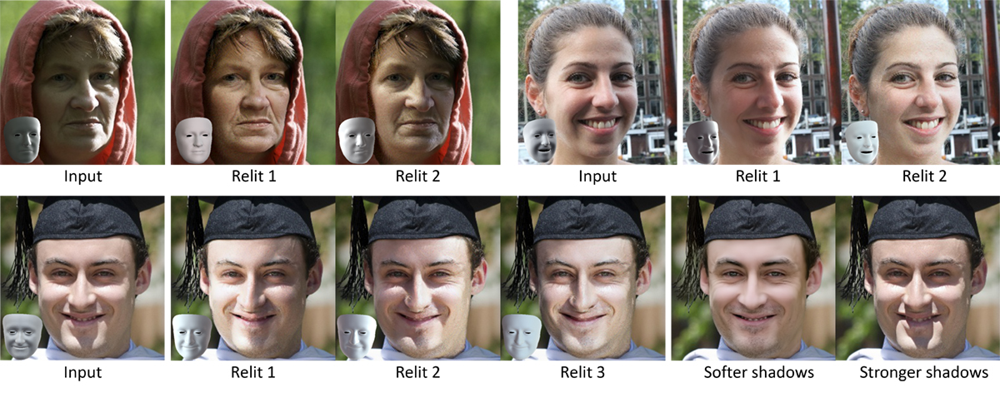

DiFaReli : Diffusion Face Relighting
: Diffusion Face Relighting
VISTEC - Vidyasirimedhi Institute of Science and Technology
Rayong,
Thailand
ICCV 2023

We present a novel approach to single-view face relighting in the wild. Handling non-diffuse effects, such as global illumination or cast shadows, has long been a challenge in face relighting. Prior work often assumes Lambertian surfaces, simplified lighting models or involves estimating 3D shape, albedo, or a shadow map. This estimation, however, is error-prone and requires many training examples with lighting ground truth to generalize well. Our work bypasses the need for accurate estimation of intrinsic components and can be trained solely on 2D images without any light stage data, multi-view images, or lighting ground truth. Our key idea is to leverage a conditional diffusion implicit model (DDIM) for decoding a disentangled light encoding along with other encodings related to 3D shape and facial identity inferred from off-the-shelf estimators. We also propose a novel conditioning technique that eases the modeling of the complex interaction between light and geometry by using a rendered shading reference to spatially modulate the DDIM. We achieve state-of-the-art performance on standard benchmark Multi-PIE and can photorealistically relight in-the-wild images.
The general idea of our method is simple: we first encode an input image into a feature vector that disentangles the lighting information from all other information in the image, then modify the lighting information in the vector and decode it. The challenge here is how to disentangle it well enough that the decoding will only affect the shading and not the person’s shape or identity. Our key idea is to leverage a conditional diffusion implicit model with a novel conditioning technique for this task and learn the complex light interactions implicitly via the DDIM trained solely on a 2D face dataset.
In particular, we use off-the-shelf estimators (DECA, Arcface, DiffAE, and BiSeNet) to encode each training image into encodings of light, shape, camera, face embedding, shadow scalar, and background image, and train a DDIM decoder conditioned on these encodings. To relight an input face image, we reverse the generative process of the DDIM conditioned on the encodings of the input image to obtain xT. Then, we modify the light encoding and decode xT back to a relit output.
Our method can realistically relight an input image to match the lighting in a "target" image. This is done by estimating the SH lighting parameters of the target image and use them instead of the input's SH parameters during decoding by our DDIM. The slider below can be used to gradually change the lighting.
We can strengthen or attenuate cast shadows by adjusting the scalar "c" in our light encoding. Our method can handle shadows cast from common accesories like eyeglasses or hats.
We present relit results when we manually move the light direction around.
We perform frame-by-frame relighting of an input video. The top shows the input video, and the bottom shows our relit result. Our method produces temporally consistent results despite its frame-by-frame prediction.
If you made it here, thanks for your interest in
DiFaReli!

Our method can relight Joker's face with his extreme makeup. Drag the separator to see different relit results.
Credit : https://www.youtube.com/watch?v=L3oOldViIgY&t=171s
@article{ponglertnapakorn2023difareli,
title={DiFaReli: Diffusion Face Relighting},
author={Ponglertnapakorn, Puntawat and Tritrong, Nontawat and Suwajanakorn, Supasorn},
journal={arXiv preprint arXiv:2304.09479},
year={2023}
}
Acknowledgements: This website template was borrowed from DreamFusion and EG3D.